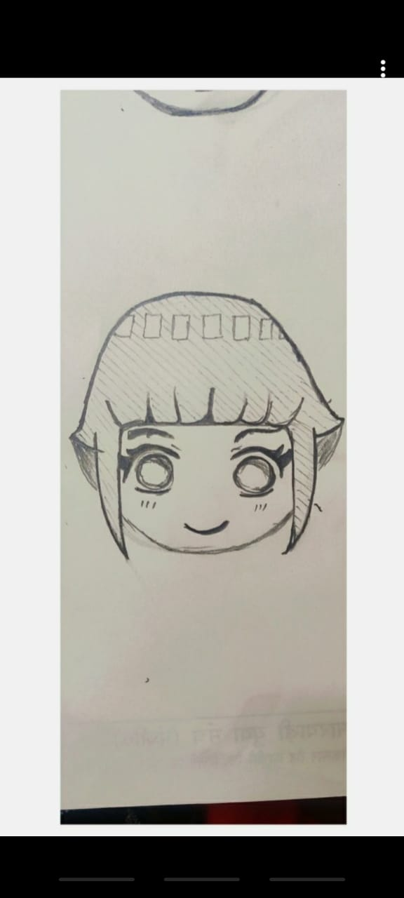
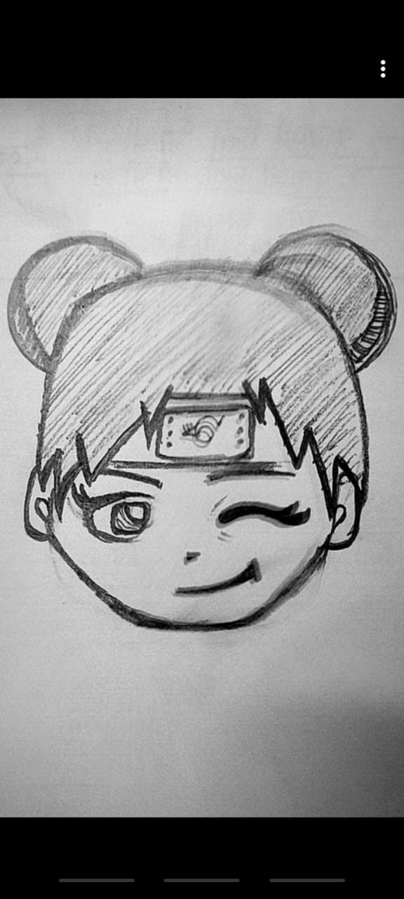
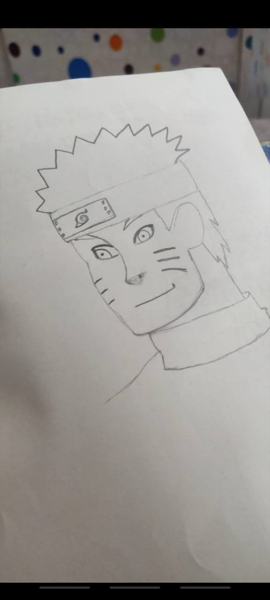
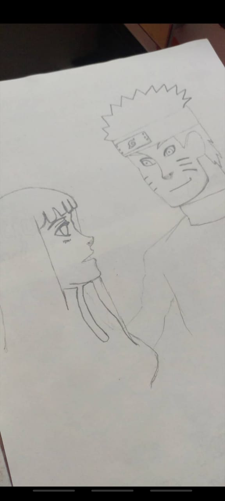
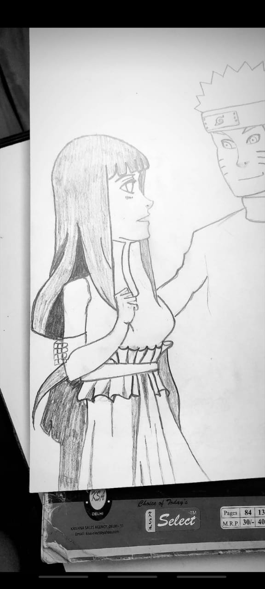
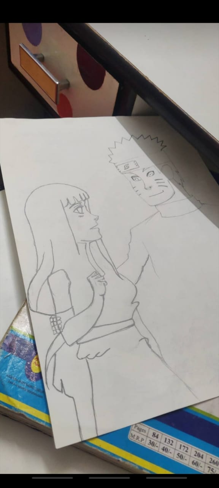
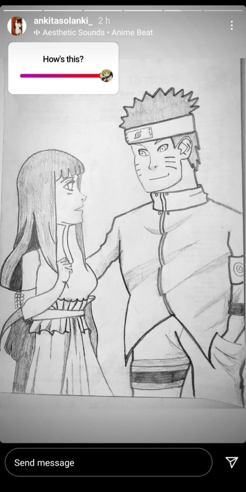

This is my fav memory of us and best pic of us!! 

Okay so this one is really special for me because you made these arts as i asked you to do this and you made it for me so it made me feel really special and i know that you love making arts so thankyou and excellent art!!!


After you made those above arts you made this really difficult one just because i asked which again made me feel really special and it meant a lot to me you knew i love anime also you made it really beautifully and it was perfect so thanks a ton!!!




